Dielňa a skladovacia hala s pozemkom v okrese Veľký Krtíš
Veľký Krtíš
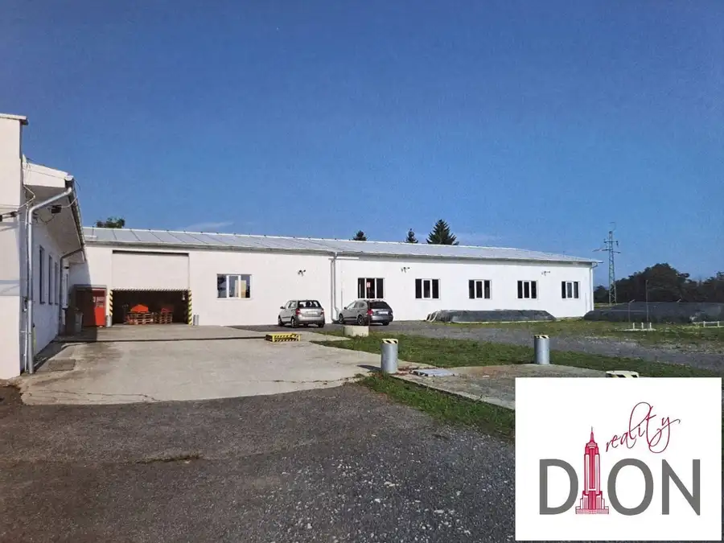
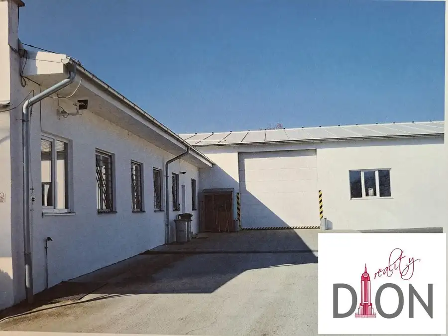
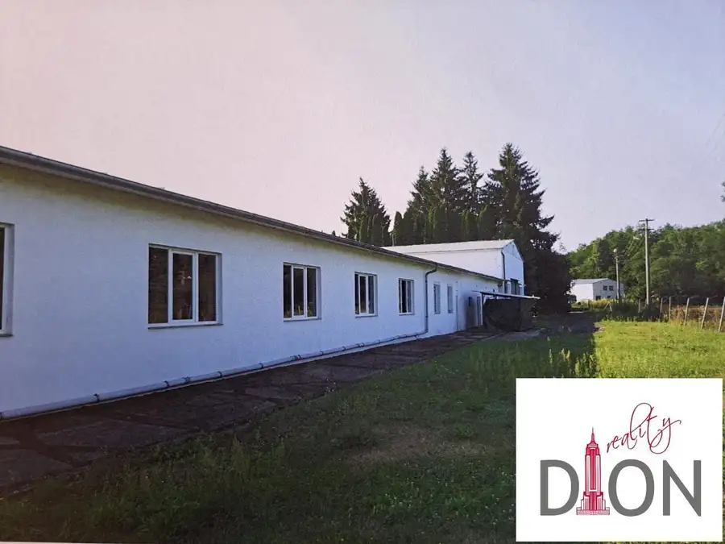
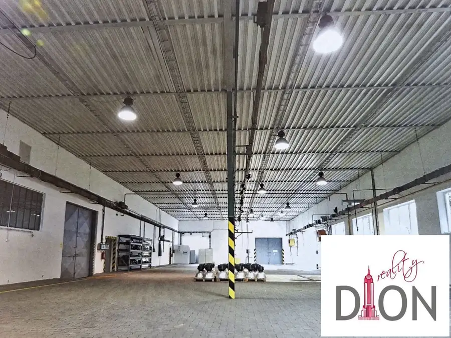
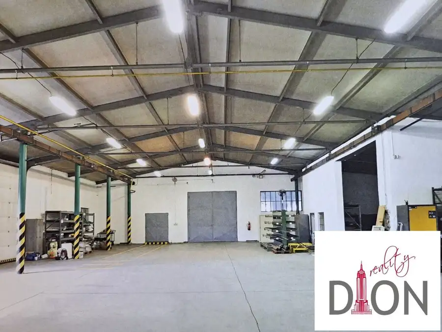
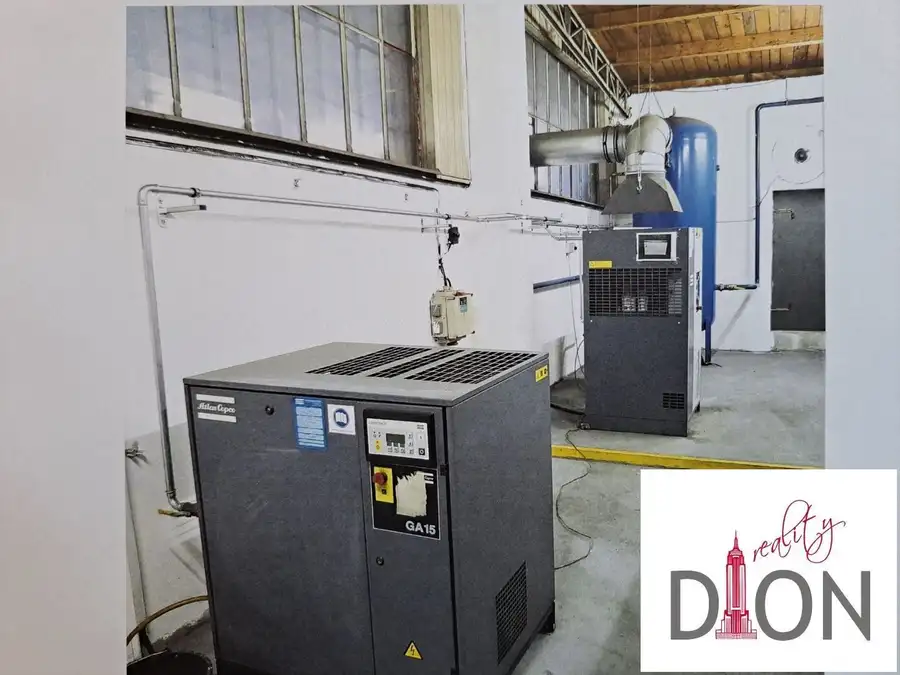
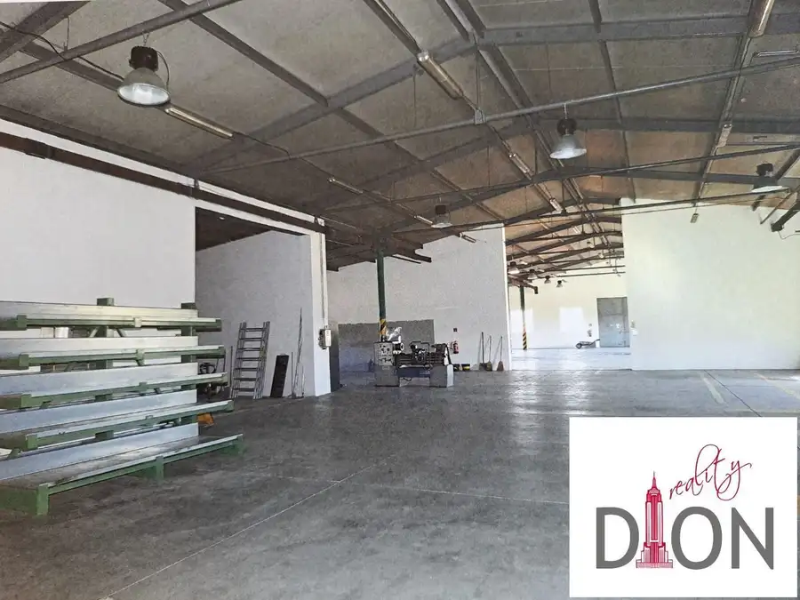
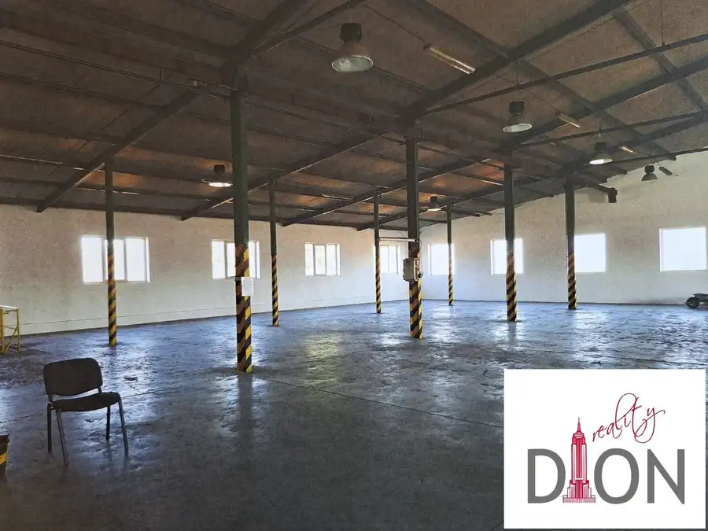
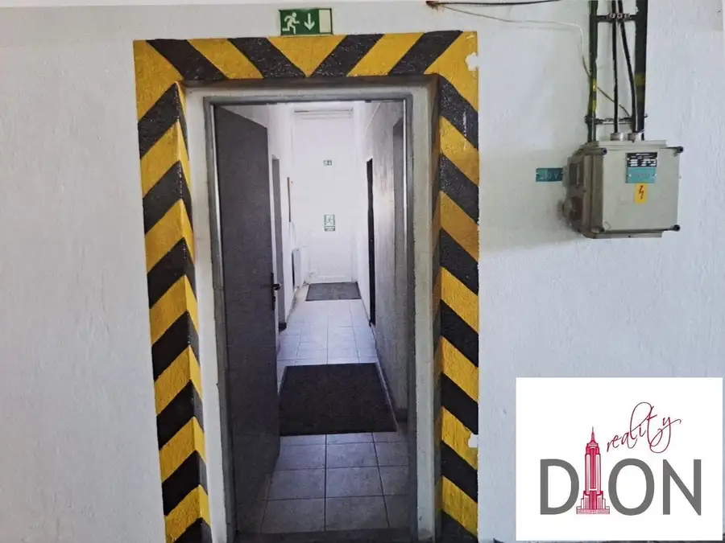
- Plocha1990 m²
- StavČiastočná rekonštrukcia
- VlastníctvoOsobné
O nehnuteľnosti
Ponúkame Vám na predaj skladovaciu halu a dielňu s kancelárskymi priestormi v okrese Veľký Krtíš, Pôtor. Úžitková plocha oboch hál je spolu cca 1990 m2. Pozemok má 9471 m2. Skladá z dvoch prepojených budov o výmere 1.800m2 z ktorých jedna má výrobnú funkciu cca 900 m2 a druhú časť tvorí sklad tiež o výmere 900 m2, zvyšných 190 m2 tvoria 3 kancelárie, šatne, kuchynka, kúpeľne a sprchy, 4 x wc muži,1 x wc ženy, 3 sprchy.Budova je tehlová, pórobetónová tvárnica. Jedna strana je zateplená, sklad nie je zateplený.Budova výrobnej časti o rozlohe 900 m2 má podlahu vhodnú pre ťažkú techniku dokonca so 4 stanicami, ktoré sú vhodné aj pre lisy, podlaha skladovej časti je železobetónová.K dispozícii je elektrina, kúrenie plynom cez robur (veľkokapacitná vyhrievacia jednotka) vo výrobnej časti a kotlom a radiátormi v sociálnych častiach a kanceláriách.V celej výrobnej časti a skladoch sú potrubia na prívod stlačeného vzduchu. V budove sa nachádza kompresorová miestnosť, kompresory k dispozícii od spoločnosti Atlas Copco. Budova má interný a externý výstražný systém.Vonkajšiu časť tvorí veľká parkovacia plocha na nakládku a vykládku, menšia parkovacia plocha zozadu budovy, na pozemok areálu sa dá vstúpiť dvomi bránami. Celková výmera pozemku a budovy je 9.471 m2.Okrem toho sa v areáli budovy nachádzajú aj železobetónové základy pre nový sklad s rozlohou 900 m², ktorý nie je dokončený a projekt je stále platný do roku 2028.Na pozemku je trafostanica, majiteľ trafostanice je SSE , aktuálna kapacita je 220 KW.IS: plyn, elektrika, pitná voda, vlastná žumpa.Budovy sú vhodné pre výrobu výrobkov zo železa aj dreva, pretože je tu potrubie na prívod stlačeného vzduchu a kompresorovňa. Môžu sa používať aj ako sklady pre dopravcov, alebo poľnohospodárske firmy. Výška skladu je v najnižšej časti 4,825 m a výška haly v najnižšej časti je 5,85 mNehnuteľnosť je pri ceste I. triedy a cca 33 km od diaľnice pri Lučenci.Cena 634 000 € bez DPH. K sume sa pripočítava aktuálna sadzba DPH. Bližšie informácie Vám radi poskytneme na tel. čísle: 0917 921 889 alebo na filova@rkdion.com.
Parametre
- Druh
- Skladový objekt
- Dátum zverejnenia
- 01. 03. 2025
- Elektrina
- Na pozemku - 230 V, Na pozemku - 400 V
- Energetický certifikát budovy
- nie je
- Odpadové vody
- Na pozemku - Žumpa
- Plocha pozemku
- 9471 m²
- Plyn
- Na pozemku
- Počet nadzemných podlaží
- 1
- Rok výstavby
- 2025
- Stav nehnuteľnosti
- Čiastočná rekonštrukcia
- Typ
- Predaj
- Typ konštrukcie
- Tehlová
- Vlastníctvo
- Osobné
- Voda
- Na pozemku - Diaľkový vodovod
- Zastavaná plocha
- 1990 m²
- Úžitková plocha
- 1990 m²
Kde to je


Mohlo by Vás zaujímať
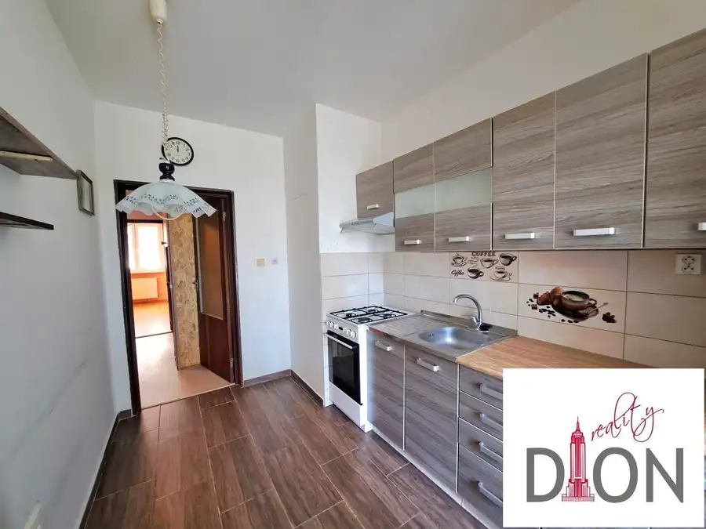
BytNové 160 000 €Praktický 2-izbový byt s lodžiou vo vyhľadávanej lokalite Sásová – ideálny na bývanie aj investíciu Banská Bystrica 2-izbový49 m²2. podlažie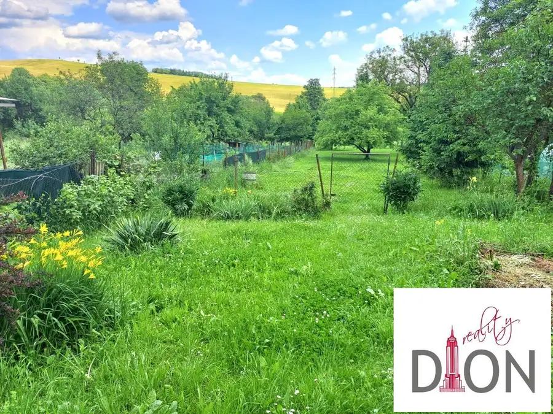
DomNové 120 000 €Rodinný dom v Nemciach na rekonštrukciu - veľká záhrada Nemce 110 m²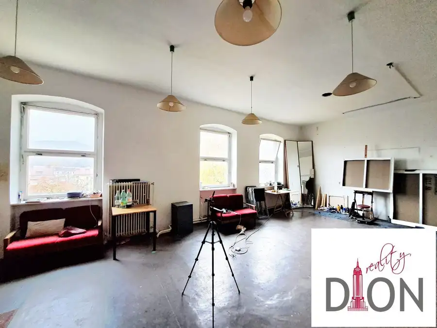
Komerčné priestoryNové 1 450 000 €Historická budova s veľkým pozemkom pri námestí SNP Banská Bystrica 3000 m²